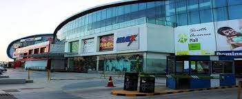
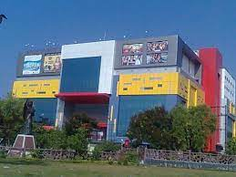

This development firm is primarily promoted by the leading family of Raja Gokuldas of Jabalpur.

The family is well respected and has an impeccable reputation.
Presently looking after several businesses in trading, manufacturing, real estate andinvestment and contributing to the society through several educational and philanthropic organizations, it preserves the legacy of over two hundred glorious years.
Other real estate projects executed by the same management in Jabalpur have satisfied customers who have also benefited by superb appreciation as well.
The company is now looking to expand and open to business and joint development proposals from other cities in central India.
Samdareeya Mall, Civic Centre, Near Mata Gujri College, Jabalpur, Madhya Pradesh 482001, India
 open:10:00 Am - 11:00 Pm
Highlights –
How costly it is :- Moderate Budget
Best visual with :- Group, Solo, Couple, Family
Speciality :- Apparels, Accessories
Due to its immense popularity, this place offen remains crammed with
people at all time of the day. Take your kids out for an enjoyable outing
to this mall.